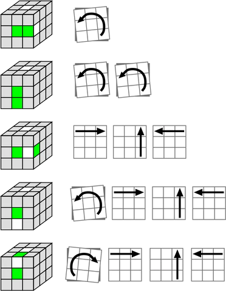
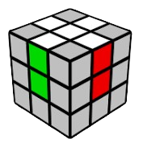
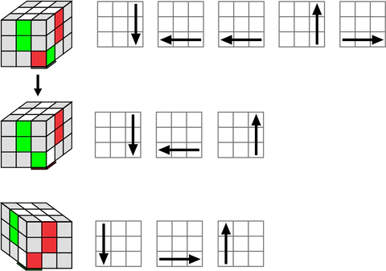
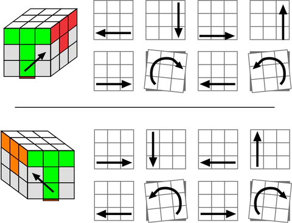
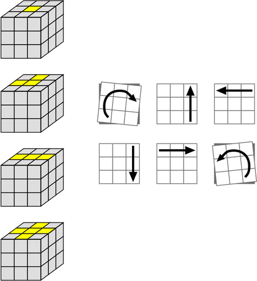
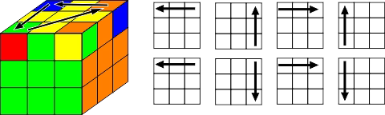
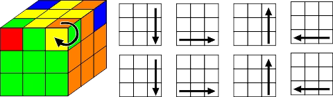

Nalezení zeleno-bílé hrany a potažení s ní na některou z pozic uvedených níže
Vyhledat obrázek, který ladí s Vaší situací a tahat dle šipek vedle


Ponecháním bílé nahoře a otočení krychle tak, aby k Vám směřoval jiný střed, docílíte následného složení zbývajících hran.
Vždy stačí jen přesunout bílé hrany na jejich místa, aniž byste poškodili ty již upevněné.
Může se občas stát, že se to nepovede. Vždy jde jen o klid a procvičování. S lehkou praxí docílíte výsledku na obrázku druhém.
A CO DÁL? - První vrstva
Držení kostky s bílým křížem nahoře a zeleným středem před Vámi
Nalezení rohu se 'zelenou' 'červenou' 'bílou' a umístění na jednu z níže uvedených pozic
Vybrat příležitostní situaci, kterou složíte daný dílek
(na prvním obrázku je bílá dole)

⚠
Pokud bude dílek na správném místě, ale špatně otočený, vložte na to místo dílek jiný
⚠
Pokud se vložení dílku povede, nechte bílou barvu nahoře a otočte kostkou tak, aby k vám směřovala jiná barevná strana.
Znovu postupujte podle výše uvedených pokynů.
Postup opakujte se zbytkem stran pro dokončení první vrstvy.
Druhá vrstva
Držení kostky s bílým křížem nahoře a zeleným středem před Vámi
Hledání hran které NEMAJÍ žlutou barvu
Nalezení ne-žluté hrany a otočení spodní vrstvy tak, aby barva hrany před Vámi odpovídala barvě středu dané strany. (viz obr. níže)

⚠
Pokud bude dílek na správném místě, ale špatně otočený, vložte na to místo dílek jiný
⚠
Přiložený obrázek zde berte pouze jako předlohu pro dokočení ostatních hran druhé vrstvy
KONEC? - žlutý kříž
Přetočení kostky tak, aby žlutý střed byl nahoře
Následně uvidíte '0' '2' nebo '4' hrany žlutou nahoru
Provedení stejného algoritmu z kterékoliv situace (vrchní vrstva musí být správně otočena)

Pokud bude kříž automaticky hotov, postupte k dalšímu kroku.
Složení hran
Teď máte '2' nebo '4' hrany vrchní vrstvy složené (posunutím horní vrstvy)
Pokud pouze 2 ↓
Ujistěte se, že složené dílky jsou vpravo a vzadu (obrázek ukazuje dílky nesložené)
⚠
"Pokud budou složené dílky vrchní vrtsvy naproti sobě, udělejte algoritmus z jakékoliv pozice a posuňte horní vrstvou tak, aby nastala pozice uvedená na obrázku. (Může jít i o jiné barvy) Následně pokračuje od bodu 2."
⚠
Správné umístění rohů
Nalezení 1 rohu, který je na správném místě (může být 0)
Otočení kostky tak, aby správně umístněný dílek byl v pravé přední pozici
Udělání algoritmu

Pokud bude 0 rohů na správném místě, udělejte algoritmus jako kdyby nějaký byl.
Po dodělání algoritmu bude 1 dílek na správném místě (opakujte body nad obrázkem)
Při velkém štěstí se Vám mohlo stát, že všechny 4 byly na správném místě, tudíž pokračujte posledním krokem.
Složení rohů
Už jen otočení jednoho dílku po druhém a kostka bude vyřešena.
Dílek se kterým pracujete MUSÍ být na pravé horní pozici

(Tento krok bude potřeba zopakovat 2x či 3x)
TENTO ALGORITMUS MŮŽE NARUŠIT ZBYTEK KOSTKY.
NEBERTE PONIČENÍ V POTAZ A PO OTOČENÍ JEDNOHO DÍLKU ŽLUTOU NAHORU POKRAČUJTE TEXTEM UVEDENÝM NÍŽE
NEPŘETÁČEJTE KOSTKU! Vždy jen posuňte vrchní vrstvou, aby nepřetočený dílek byl na pravé, horní pozici.